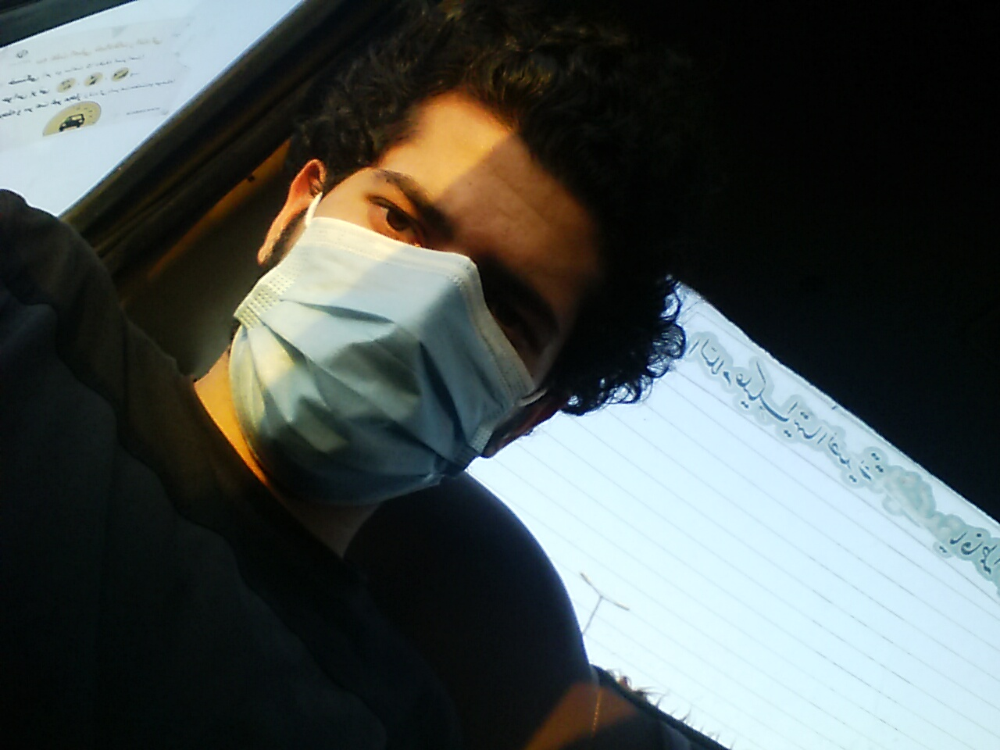
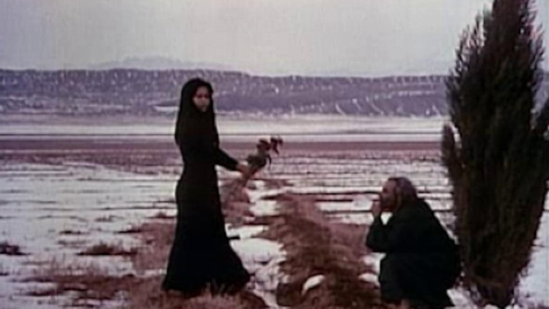

Sadra Sabouri
PhD Candidate
Open Source Developer
When the world ends.
July 2021
Monday, 5:00 PM (in the midst of COVID-19)
Lightning struck. The sky was heavy and overcast. A miserable drizzle (the weak, annoying kind of rain) was falling, accompanied by a weirdly bright sun. But the atmosphere was far too harsh and gloomy for a rainbow to form.
I walked across the Jannah Bridge—which I think is where the song Nagahan by Shahin Najafi was born—toward West Bus Terminal. Unlike usual, when passenger hustlers would snatch you out of thin air, there wasn't a single bus or ride in sight—half the intercity routes were still suspended, and the other half ran whenever they felt like it. I ended up buddying up with a passenger heading to Lahijan: an ethnic Turk, a petrochemical engineer harboring dreams of building a refinery in Turkey—a Mr. Naderi, resident of the Shaqayeq neighborhood. He was a chatty, hyper-social type—the kind of person who, by the time you reach your destination, knows every single microscopic detail of your life.
Nagahan — Shahin Najafi.
Naderi called a few contacts and told them to save two spots for us out of the four cars heading toward Tehran. We waited half an hour, but nothing came of it. He called back, only to find out that 2 out of the 4 had turned around. I thought I’d be leaving at 5:00 PM, but now it was 6:30 PM and the situation was completely uncertain.
Then we met a woman living near Lahijan—a bit of a baddie. We decided to hire a private car together. Walking outside the terminal, we bumped into two other people who wanted to head toward Gilan province (Rasht and Langarud). They introduced us to Maxim—an intercity ride-hailing service like Snapp or Tapsi (Iran’s local Uber equivalents).
The woman who was with us called Maxim, and it was agreed that a car would arrive within 10 minutes for 680,000 Tomans. After 7 minutes, the driver called her back and, in a tone that was—as the woman put it—decidedly aggressive, demanded 800,000 Tomans instead. She rejected it.
A little while later, she called Maxim again, and by pure chance, we got stuck with the exact same driver. This time, Naderi spoke to him and agreed proudfully to the 800,000 Toman fare.
We walked toward the driver (about a 20-minute walk). On the way, I genuinely felt a sense of "family" with them. The woman was complaining about the driver’s bad attitude, flexing her own, and dragging the ends of her verbs with that melodious pitch typical of Gilaki speakers. But when we actually reached the driver, we were all in absolute shock.
An utterly exhausted Samand (a notoriously common, clunky domestic Iranian sedan). A driver who looked like he had dropped his bafor (traditional opium pipe) just seconds ago to grab the steering wheel. High-pitched voice. Total "Jamshid Khatari" (slang for a sketchy, unpredictable street character) vibes. I had scheduled a meeting with someone internationally for 4:30 AM and desperately needed to make it by then. So this was my only hope.
We got in. The interior of the car looked as if it was shedding its own skin. The moment we sat down, the woman started complaining, and the driver began defending himself [at first, he assumed Naderi was her husband and I'm their son]. Once that drama wrapped up, he mentioned his wife was pregnant and that he was working day and night to buy her newborn a birthday present. The driver claimed he buys old cars and fixes them up, boasting that he’s been driving since he was 14 (reminiscing about driving a big Chevrolet—a "boat").
The woman pulled out a container of Olivier salad (a cold chicken and mayonnaise potato salad) and offered some around. I took a bite. When it was Naderi’s turn, right after his first bite, we realized he was allergic to mayonnaise and that his lungs react badly to it. Acting excessively dramatic, he ended up throwing the bite right out of the car window.
I gave him the soda I was holding, and he downed the whole thing in one go ;(
So there I was: having eaten only the first quarter of my sandwich, staring at a pitiful scrap of kalbas (Iranian cold-cut sausage) left behind, and no soda to wash it down.
How on earth did I trust any of these people? None of these events were my choice; I had merely passively agreed to them.
What if the driver and the woman were in on it together, running this whole ridiculous setup? Naderi was too innocent for such a thing to be honest.
When he deviated from the main highway and took the side route through Shahriar and Karaj, I felt even more convinced.
Like every other driver, he claimed he was a major player in the criminal underworld in his youth but went straight in 2007 ('86 in the Persian calendar). He also worked as a satellite dish installer. The entire ride, he bragged about his achievements. Why do we never talk about our failures? Why do we always act like who we are today is exactly who we intended to be?
As he put it, he had "acted smart" by seizing his parents' house from his brothers and sisters—a property now worth 2 billion Tomans—and declared he wouldn't work a single day after turning 50. The woman, who was utterly irritated by everything, snapped at the driver during every single conversation, while Naderi kept trying to de-escalate the tension.
After he lit his 12th Bahman cigarette (a famously harsh, cheap Iranian brand), we rejoined the main highway from the Shahriar road, only to be swallowed by gridlocked traffic an hour before Nazarabad.
Whenever the woman wasn't looking, I would steal glances at her. She was simply beautiful. Every now and then, I’d whisper something in her ear to mock the driver just to make her laugh, and I felt a petty sense of satisfaction from it.
The air had gotten sweltering (A/C was the last thing you'd find in this tired old Samand). The dust kicked up by cars taking the dirt shoulder mixed with the humid air and settled on my face mask.

Somewhere on the road, still masked, still in the Samand.
Naderi started his dramatic routine again, letting out fake coughs followed by, "I’m fine, don't worry about me" [he would've made a classic Shohar-Ameh—the cliché overly theatrical, patronizing uncle].
All these scenes unfolded against the backdrop of the driver's squeaky voice, rambling endlessly about his grand conquests and how much more he loves his second wife compared to his first (with whom he has an 11-year-old child he sent off to Sweden). Then, just like every other Iranian driver, he bragged about a genius nephew who invented something, got rejected in Iran, and was immediately snatched up by Canada—cue the sigh: "Sigh... they just don't appreciate our youth!"
Every time he said that, the woman would start groaning. Truly, a stream of conversations that never ended and led absolutely nowhere.
Then came the sound of an ambulance siren. The moment the driver heard it, he swerved right behind the ambulance and sped forward. Though, honestly, there wasn't much of a clear path even for the ambulance. According to our driver’s brilliant analysis:
"These bastards have blocked Nazarabad; they’re turning all these scumbags back."
He meant the checkpoints. Plates from the wrong city were being sent home.
Right after delivering his sermon on "pure Aryan culture," a car tried to merge into our lane:
"Where do you think you’re going, you trash?!"
He literally pulled a sickle out from under his seat.
And right in that exact cinematic moment, his car stalled out.
He tried starting it several times, but it wouldn't budge. We all exchanged looks; the eyes were practically dripping with unanimous regret. But it only took another try before it starts back on.
After another hour, we finally reached the end of that stretch, only to realize the traffic had been funneled into a single lane by the new jerseys (those heavy concrete highway lane barriers) for absolutely no reason at all. It was 10:30 PM, and we hadn't even reached Qazvin yet. Everyone had gone quiet. But sleeping on those seats was an absolute impossibility.
We pulled over at "Aftab-e Sahra" (a well-known highway rest stop).
We found out the driver's name was Ebrahim, but that we should call him "Ebi." The woman (who, based on her stories, I figured was born in late 1990th) and I struck a deal with Naderi: we would give our share of the fare to him so he could hand it to Ebi at the end of the trip (we honestly weren't sure this car would make it all the way to Lahijan).
I bought a small yellow Fanta from the rest stop to drink with what was left of the cold-cut sandwich.
We got back into the car. Ebi, acting as if he’d just unearthed his holy grail playlist, started blasting the absolute trashiest, most khaz-o-khil (tacky/cringe) songs in Iranian pop music (starting off with "Dooneh Dooneh, Dooneh Dooneh, ye setareh too asemoone...").
Dooneh Dooneh, in all its glory.
The woman was sitting next to me; Naderi and Ebi were up front, staring out at the city lit up in the night. I felt the urge to wax philosophical with her—to talk about how different everything looks when the night meets the city lights, and how those tiny specks of light highlight our utter insignificance. But I talked myself out of it; she didn't seem to have much of a poetic soul anyway. She mentioned she studied legal philosophy, had been working since she was 19, and complained that you can't survive on 4 million Tomans a month...
When the music took an even more atrocious turn, I tried to get her validation, hoping she’d agree the songs were garbage. Instead, I caught her quietly humming along to the rhythm, so I dropped it.
After the rest stop, we had swapped seats. Now I was directly behind Ebi, and she was behind Naderi.
By the time Ebi finished his 35th cigarette, he finally switched off the stereo. I rested my temple against my knuckles and drifted off for 15 minutes.
When I woke up, I was drenched in sweat. It was midnight. We were in Lushan—a place that felt like the absolute starting point of existential exhaustion and pure irritability.
My eyes landed on the woman, who was fast asleep. She looked exactly like the image of the girl across the river in Sadegh Hedayat’s The Blind Owl (Boof-e Koor) novel, and I felt just as ancient as the old man beside a tree.

Something like this from The Blind Owl (1975), on MUBI.
She was sleeping with her arms crossed over her chest.
By that point, she was completely drained. The only way she expressed her annoyance at the driver's endless rambling was by making faces, rolling her eyes, and throwing frustrated glances my way. She was dropped of an hour later and we got to Lahujan with Mr. Naderi. We shook hands and took our own ways knowing that day was the first and last day we know each other.